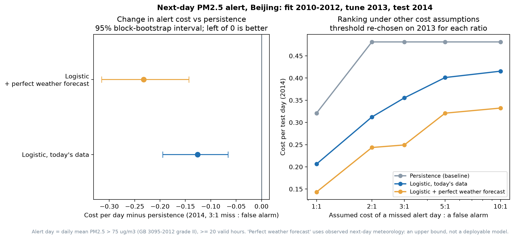

05 / Missingness and observational evidence · Jiayu Yan
Missing hours are part of the finding.
What associations with Beijing PM2.5 remain defensible when missing-data policy and measurement periods are made explicit?
Data and method
The 2010–2014 series has 43,824 hourly rows and 2,067 missing pollution readings. Headline distributions and correlations use the 41,757 observed hours. A separate policy audit considers filling only gaps of at most three hours; those candidate values are not used in the headline analysis.

What was measured
48.5% of observed hourly readings exceed 75 µg/m³, a daily-standard reference value. This is not an hourly or daily compliance rate. Cumulated wind speed has Spearman ρ = −0.360; median pollution is 107 versus 17 µg/m³ in its lowest and highest deciles.
Temperature has Pearson r = −0.091 and Spearman ρ = +0.011. Different signs alone do not prove non-monotonicity. Conditional summaries offer additional descriptive evidence.
Interpretation and limits
Preserve the distinction between observed data and imputation scenarios. Missingness may be informative; serial dependence, weather and season confound marginal relationships. These comparisons neither identify an emissions intervention nor validate changes to business schedules.
From association to a decision
Should a team issue an alert tonight for tomorrow? An alert day has a daily mean above 75 µg/m³ (at least 20 valid hours). The model is fitted on 2010–2012, its threshold is chosen on 2013, and it is tested once on 2014: 349 days, 181 of them alert days.
A missed alert day is assumed to cost three false alarms. At that ratio the best persistence rule alerts every day and raises 168 false alarms. A logistic model on same-day data catches 174 of 181 alert days with 103 false alarms, AUC 0.878 versus 0.679. Its cost per day is 0.126 lower, 95% block-bootstrap CI [0.066, 0.195], and it wins at every cost ratio from 1:1 to 10:1.
Adding observed next-day weather, an upper bound for a perfect forecast, removes another 55 false alarms. That is the case for integrating a forecast feed before deployment.
